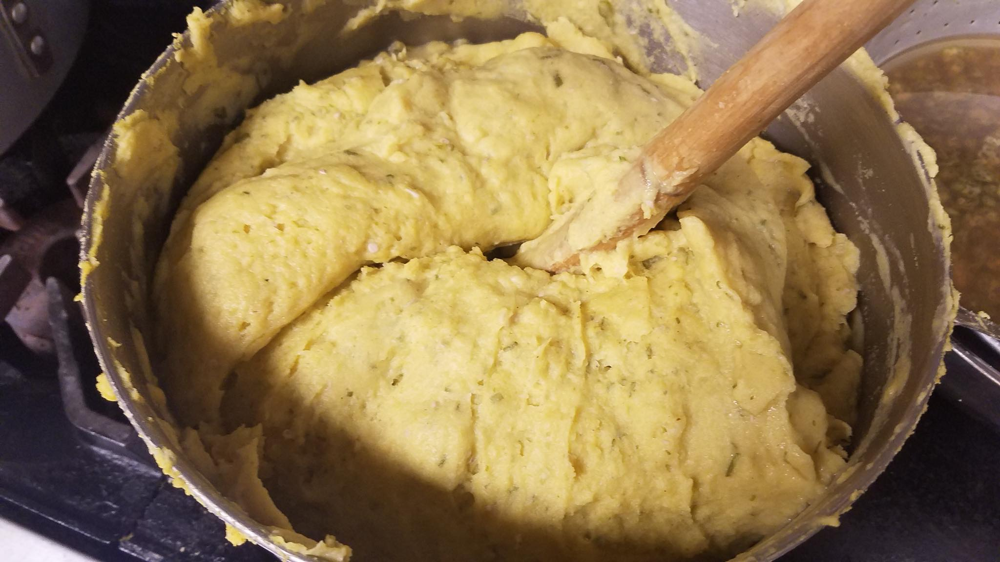

November 2017 Summary
|
The meeting highlights for this month are as follows:
REMINDERS: All persons who signed up, stay tuned to your email for more details on the bus meeting point and time. |
 Coucou is life! |
Confused in Orlando Series - Letter #2
By: Marjorie McCauley, a CFL Bajan
Dear Pearl,
How yuh doing girl? I hay lying down resting muhself and quick so it flash cross muh mind dat it soon gine to be de 30th November. Dat mean de rest at home will be doing tings enuff fuh de Independence. I did thinking of calling up Obe and Patsy to see if dey going anyway to celebrate. Girl, I did too like dem early days!
Yuh rememba Green Punckin? I butt she up here in de mall a few months back and I forget to tell you dat I did butt she up. Obe and Patsy cahn rememba she atall. Yuh know I doan like to talk bout people, but de best way to describe she is, “she is de one dat had nuff riders in she mout, and always platt she hair in corn row. She did real duncy at school too.”
Yuh know how she get dat name?! I kin rememba like it was yesterday. It was de 30th November. A whole bunch of people was out in front Miss Skeete house, they light a big pile of tires and was sitting round telling jokes, playing games and eating conkies. We always use to do dat when it was de 5th but den dey changed it to the 30th.
De small children had starlights and pretty matches whilst de big children would leggo bombs and bandits. Miss Jordan did just finish telling we bout de dominique hen dat did belong to Sugar Soil dat could talk. Den Mavis talked bout de heart men, Maud talked bout de duppies, but doan fool yuhself dey had some real bad ones down St. Lucy. By dis time we small children frighten like wuh. All I could tink bout is dat we had to walk down zee line by weself and down dere was pitch black.
Den it was Shortie turn. He seh, “Shut wunnah eye” and den start to play “Hiddy-Biddy.” When we open we eye all de conkies gone. Up to dis day we nevva find out wuh happen to dem conkies. Anyway, it din close to overring yet, so Green Punckin fadda went home to get some more conkies fuh we. He share dem round and wen de first woman bite into hers, she holler out, “But Boysie, weh de punckin?” Green Punckin had forgotten to put in the pumpkin. Now Boysie cruel! He holler out at he daughter and started to blista she in licks. She was so frightened, she sings out, “Wuh Daddy, wen I cut de punckin de inside did green so I cuhn put it in!” To mek a long story short, It took de likes of John Juckum and Jarpunk to quiet down Boysie dat night. But cuddere, it din even she fault. She mudda did home suffering from a lining cold and Green Punckin did just tryin to help out!
But you know de ting dat really got me? Dat man was a panboiler from Guyana and if mouta din open she mout and asked bout de punckin, he would nevva know it did missing, cause dem en know nuffin bout we conkies. But girl child, she look good enuff now. I could see she aint studying none of we. She pretty-pretty like a butta-ball. America really agree with some people, nuh?
Looka, you must rememba to de rest fuh me and tell dem I will drop dem a line afta de holidays.
All de Best,
Confused in Orlando

Confused in Orlando series - Letter #2 by Marjorie McCauley is licensed under a Creative Commons Attribution-NonCommercial-NoDerivatives 4.0 International License.
Because when Bajans hangout, they say the darnest things!
Bajan glossary
- duncy: very stupid
- conkie: a sweet pastry traditionally made during the month of November to celebrate Barbados' Independence
- lining cold: a cold caught by a mother just after child birth
Highlights
November attendees
Article in the Barbados Nation about the CFLBajans Gala event
Surprise! Happy birthday to one of our active members!